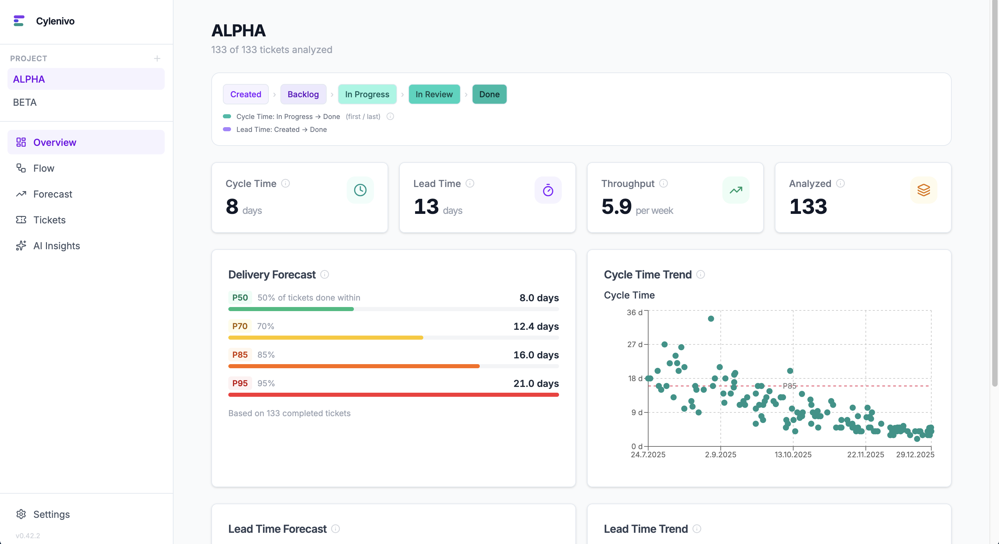

Cylenivo fills the gap. Cycle time, lead time, throughput, and delivery forecasts — pulled straight from your Jira data. No cloud, no accounts, no subscription.
Apple requires paid notarization for indie apps. Open System Settings → Privacy & Security and click "Open Anyway" after the first launch attempt.
Or in Terminal:
xattr -cr /Applications/Cylenivo.app
SmartScreen flags unsigned apps. When the blue warning appears, click "More info" then "Run anyway". This is a one-time step.

Built around the metrics that actually matter — not vanity numbers.
See the full distribution with P50, P70, P85, and P95 percentiles. Know what "normal" looks like and spot outliers.
Track how many tickets your team completes per week and watch the trend over time.
Monte Carlo simulation answers "When will we be done?" and "How much can we ship in 4 weeks?" with real confidence levels.
Find where work gets stuck. See average time spent in each status across all your tickets.
See which ticket types take longest and how often work loops back. Understand where your time actually goes.
Connect your own Ollama or OpenAI-compatible model to get a narrative analysis of your team's flow data.
Jira is built in. Community plugins add more — or build your own in ~50 lines of JavaScript.
Built in. Connect with a URL + API token, or import a CSV export. No plugin needed.
Community plugin. Import work packages from OpenProject — cloud or self-hosted.
Install via plugin browser →Build a connector in plain JavaScript. Implement two functions — Cylenivo handles the rest.
Plugin development guide →Jira is built in. OpenProject and other tools are available via community plugins. Install them directly inside Cylenivo.
Tell Cylenivo which statuses mark the start and end of Cycle Time and Lead Time for your team's process.
Explore the dashboard, spot trends, run forecasts, and have real conversations about how your team works.
Cylenivo is a desktop app. All your ticket data is stored locally in a SQLite database on your computer. No cloud, no accounts, no telemetry. Your team's work is yours.
Free to download and use. No account needed.